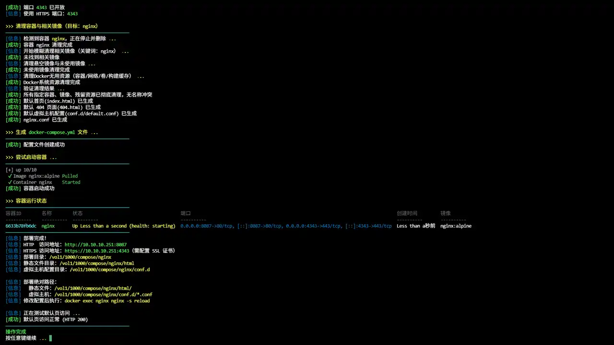
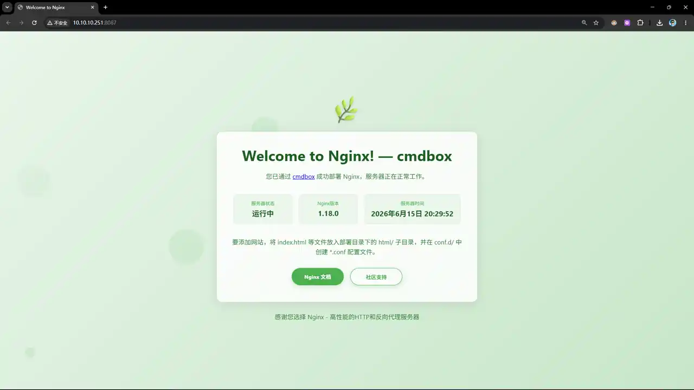

compose_install_nginx
Compose 部署 Nginx 反向代理服务器
一键脚本
bash <(curl -sL gitee.com/meimolihan/cmdbox/raw/master/sh/compose_install_nginx.sh) 80 443 /vol1/1000/compose/nginx
bash <(curl -sL ../sh/compose_install_nginx.sh) 80 443 /vol1/1000/compose/nginx
| 传参方式 | 命令示例 | 说明 |
|---|---|---|
| 不传参（交互式） | 脚本.sh | 正常进入交互式流程 |
| HTTP + HTTPS + 目录 | 脚本.sh 80 443 /vol1/1000/compose/nginx | 同时传入端口和目录 |
| HTTP + 目录 | 脚本.sh 80 /vol1/1000/compose/nginx | 传入 HTTP 端口和目录 |
| 目录 + HTTP | 脚本.sh /vol1/1000/compose/nginx 80 | 先目录后端口（兼容旧格式） |
| 只传 HTTP | 脚本.sh 80 | 仅传入 HTTP 端口 |
| 只传目录 | 脚本.sh /vol1/1000/compose/nginx | 仅传入目录参数 |
效果预览


补充说明
Nginx 是一款高性能的 HTTP 服务器和反向代理服务器，以其高并发处理能力、低资源消耗和丰富的模块生态而闻名。
- 🌐 官网地址：https://nginx.org
- 🐱 GitHub：https://github.com/nginx/nginx
- 🐋 Docker Hub：https://hub.docker.com/_/nginx
功能特点
- 支持交互式和传参两种部署模式（可指定目录和端口）
- 自动生成主配置文件
nginx/nginx.conf，开启 SSL、Gzip、日志等优化 - 预设目录结构：
html/（站点文件）、conf.d/（虚拟主机配置）、keyfile/（SSL 证书）、logs/（日志） - 自动检查并安装 Docker 和 Docker Compose 环境
- 智能端口管理：检查端口是否放行，自动开放并持久化 iptables 规则
- 清理旧容器：部署前自动清理同名容器和相关镜像
- 部署后显示容器状态和访问地址
目录结构
部署目录/
├── docker-compose.yml
├── nginx/
│ └── nginx.conf # 主配置文件
├── conf.d/ # 虚拟主机配置（*.conf）
│ └──default.conf # 默认页配置
├── html/ # 站点文件
│ ├──404.html # 错误页面
│ └──index.html # 默认页
├── logs/ # 访问日志和错误日志
└── keyfile/ # SSL 证书文件
输出说明
| 字段 | 说明 |
|---|---|
| 项目标题 | 显示部署的项目名称 |
| Docker 环境检查 | 检查并自动安装 Docker/Docker Compose |
| 部署目录 | 显示 Compose 文件存放路径 |
| 映射端口 | 显示 HTTP 和 HTTPS 端口 |
| 端口状态 | 检查并开放防火墙端口 |
| 容器清理 | 显示旧容器和镜像的清理结果 |
| 配置文件 | 显示 nginx.conf 和 docker-compose.yml 创建状态 |
| 容器启动 | 显示容器启动结果 |
| 容器状态 | 显示容器 ID、名称、状态、端口等信息 |
| 访问地址 | 显示 HTTP 和 HTTPS 访问 URL |
注意事项
- 脚本需要 root 权限或 sudo 权限来安装依赖和配置防火墙
- 默认使用
nginx:alpine镜像 conf.d/目录挂载到/etc/nginx/conf.d，放入.conf文件即可生效html/目录挂载到/usr/share/nginx/html，放入静态文件即可访问keyfile/目录用于存放 SSL 证书和密钥- 修改配置后执行
docker exec nginx nginx -s reload热重载 - 脚本会自动检测并开放防火墙端口
- 如需完全卸载，可使用文档末尾的一键卸载命令
Docker 运行
docker run -d \
--name nginx \
--restart unless-stopped \
--network bridge \
-p 80:80 \
-p 443:443 \
-v ./keyfile:/etc/nginx/keyfile:ro \
-v ./conf.d:/etc/nginx/conf.d:ro \
-v ./html:/usr/share/nginx/html:rw \
-v ./logs:/var/log/nginx:rw \
-v ./nginx/nginx.conf:/etc/nginx/nginx.conf:ro \
-e TZ=Asia/Shanghai \
nginx:alpine
脚本源码
#!/bin/bash
set -uo pipefail
# ====================== 【可自定义配置区】 在这里修改所有默认参数 ======================
# 项目标题
DEFAULT_TITLE="Nginx Web 服务器 一键部署"
# 部署目录（不传参时的默认路径）
DEFAULT_COMPOSE_DIR="/vol1/1000/compose/nginx"
# 默认访问端口（不传参时使用）
DEFAULT_PORT="80"
# 默认容器名称（可自定义）
DEFAULT_CONTAINER_NAME="nginx"
# ====================================================================================
list_color_init() {
export gl_hui=$'\033[38;5;59m'
export gl_hong=$'\033[38;5;9m'
export gl_lv=$'\033[38;5;10m'
export gl_huang=$'\033[38;5;11m'
export gl_lan=$'\033[38;5;32m'
export gl_bai=$'\033[38;5;15m'
export gl_zi=$'\033[38;5;13m'
export gl_bufan=$'\033[38;5;14m'
export reset=$'\033[0m'
}
list_color_init
log_info() { echo -e "${gl_lan}[信息]${gl_bai} $*"; }
log_ok() { echo -e "${gl_lv}[成功]${gl_bai} $*"; }
log_warn() { echo -e "${gl_huang}[警告]${gl_bai} $*"; }
log_error() { echo -e "${gl_hong}[错误]${gl_bai} $*" >&2; }
break_end() {
echo -e "${gl_lv}操作完成${gl_bai}"
echo -e "${gl_bai}按任意键继续 ${gl_hong}.${gl_huang}.${gl_lv}.${gl_bai} \c"
read -r -n 1 -s -p ""
echo ""
clear
}
sleep_fractional() {
local seconds=$1
if sleep "$seconds" 2>/dev/null; then return 0; fi
if command -v perl >/dev/null 2>&1; then perl -e "select(undef, undef, undef, $seconds)"; return 0; fi
if command -v python3 >/dev/null 2>&1; then python3 -c "import time; time.sleep($seconds)"; return 0; fi
if command -v python >/dev/null 2>&1; then python -c "import time; time.sleep($seconds)"; return 0; fi
local int_seconds=$(echo "$seconds" | awk '{print int($1+0.999)}')
sleep "$int_seconds"
}
exit_animation() {
echo -ne "${gl_lv}即将退出 ${gl_hong}.${gl_huang}.${gl_lv}.${gl_bai}\c"
sleep_fractional 0.5
echo -ne "${gl_hong}.${gl_huang}.${gl_lv}.${gl_bai}\c"
sleep_fractional 0.6
echo ""
clear
}
exit_script() {
echo ""
echo -ne "${gl_hong}感谢使用，再见！ ${gl_hong}.${gl_huang}.${gl_lv}.${gl_bai}\c"
sleep_fractional 0.5
echo -ne "${gl_hong}.${gl_huang}.${gl_lv}.${gl_bai}\c"
sleep_fractional 0.6
clear
exit 0
}
column_if_available() {
if command -v column &> /dev/null; then
column -t -s $'\t'
else
cat
fi
}
root_use() {
clear
if [ "$EUID" -ne 0 ]; then
echo -e "\n${gl_zi}>>> ROOT登录检查 ${gl_hong}.${gl_huang}.${gl_lv}.${gl_bai}"
echo -e "${gl_bufan}————————————————————————————————————————————————${gl_bai}"
echo -e "${gl_huang}提示: ${gl_bai}该功能需要root用户才能运行！"
echo -e "${gl_bufan}————————————————————————————————————————————————${gl_bai}"
break_end
return 1
fi
return 0
}
check_and_open_port() {
local PORT="$1"
if [[ -z "$PORT" ]]; then
log_error "未指定端口"
return 1
fi
log_info "检查端口 ${gl_huang}${PORT}${gl_bai} 是否放行 ${gl_hong}.${gl_huang}.${gl_lv}.${gl_bai}"
if iptables -L INPUT -n 2>/dev/null | grep -qE "dpt:${PORT}[[:space:]]|dpt:${PORT}$" 2>/dev/null; then
log_ok "端口 ${PORT} 已放行，无需操作"
return 0
fi
log_warn "端口 ${gl_hong}${PORT}${gl_bai} 未放行，正在开放 ${gl_hong}.${gl_huang}.${gl_lv}.${gl_bai}"
iptables -I INPUT -p tcp --dport "${PORT}" -j ACCEPT 2>/dev/null
iptables -I INPUT -p udp --dport "${PORT}" -j ACCEPT 2>/dev/null
log_info "保存防火墙规则 ${gl_hong}.${gl_huang}.${gl_lv}.${gl_bai}"
local SAVED=0
if command -v iptables-save >/dev/null 2>&1; then
mkdir -p /etc/iptables 2>/dev/null
if iptables-save > /etc/iptables/rules.v4 2>/dev/null; then
log_ok "IPv4 规则已保存到 /etc/iptables/rules.v4"
SAVED=1
fi
if command -v ip6tables-save >/dev/null 2>&1; then
ip6tables-save > /etc/iptables/rules.v6 2>/dev/null
fi
fi
if command -v netfilter-persistent >/dev/null 2>&1; then
log_info "尝试 netfilter-persistent 保存..."
(
timeout 5 netfilter-persistent save >/dev/null 2>&1
) &
local SAVE_PID=$!
local WAIT=0
while kill -0 $SAVE_PID 2>/dev/null && [ $WAIT -lt 6 ]; do
sleep 1
WAIT=$((WAIT + 1))
done
if kill -0 $SAVE_PID 2>/dev/null; then
kill -9 $SAVE_PID 2>/dev/null
log_warn "netfilter-persistent 保存超时，已跳过"
else
wait $SAVE_PID 2>/dev/null
if [ $? -eq 0 ]; then
log_ok "netfilter-persistent 保存成功"
SAVED=1
fi
fi
fi
if [ $SAVED -eq 0 ] && command -v service >/dev/null 2>&1; then
if service iptables status >/dev/null 2>&1; then
log_info "尝试 service iptables save..."
(
timeout 5 service iptables save >/dev/null 2>&1
) &
local SAVE_PID=$!
local WAIT=0
while kill -0 $SAVE_PID 2>/dev/null && [ $WAIT -lt 6 ]; do
sleep 1
WAIT=$((WAIT + 1))
done
if kill -0 $SAVE_PID 2>/dev/null; then
kill -9 $SAVE_PID 2>/dev/null
log_warn "service iptables save 超时"
else
wait $SAVE_PID 2>/dev/null
if [ $? -eq 0 ]; then
log_ok "service iptables save 成功"
SAVED=1
fi
fi
fi
fi
if [ $SAVED -eq 0 ] && command -v iptables-save >/dev/null 2>&1 && [ -f /etc/iptables/rules.v4 ]; then
log_info "iptables 规则已通过文件备份: /etc/iptables/rules.v4"
log_info "重启后如需恢复规则，可执行: iptables-restore < /etc/iptables/rules.v4"
SAVED=1
fi
if [ $SAVED -eq 0 ]; then
log_warn "无法自动持久化保存规则，但端口已临时开放"
log_info "如需永久保存，请手动执行: iptables-save > /etc/iptables/rules.v4"
fi
log_ok "端口 ${gl_lv}${PORT}${gl_bai} 已开放"
}
check_port_available() {
local PORT="$1"
if ss -tuln | grep -q ":${PORT} "; then
return 1
elif netstat -tuln 2>/dev/null | grep -q ":${PORT} "; then
return 1
else
return 0
fi
}
get_free_port() {
local start_port=$1
local port=$start_port
while ! check_port_available $port; do
port=$((port + 1))
if [ $port -gt $((start_port + 100)) ]; then
echo ""
return 1
fi
done
echo $port
}
docker-ps-cn() {
{
local filter_name="$1"
local docker_filter=""
if [ -n "$filter_name" ]; then
docker_filter="--filter name=${filter_name}"
fi
printf "%s%s\t%s\t%s\t%s\t%s\t%s%s\n" "$gl_hui" "容器ID" "名称" "状态" "端口" "创建时间" "镜像" "$reset"
printf "%s%s\t%s\t%s\t%s\t%s\t%s%s\n" "$gl_hui" "----------" "----------" "----------" "----------" "----------" "----------" "$reset"
docker ps ${docker_filter} --format "{{.ID}}\t{{.Names}}\t{{.Status}}\t{{.Ports}}\t{{.RunningFor}}\t{{.Image}}" | \
awk -v green="$gl_lv" -v yellow="$gl_huang" -v cyan="$gl_bufan" -v blue="$gl_lan" -v white="$gl_bai" -v reset="$reset" -v gl_bai="$gl_bai" '
BEGIN {FS="\t"; OFS="\t"}
{
id = substr($1, 1, 12)
name = $2
status = $3
ports = $4
time = $5
image = $6
gsub(/ years ago/, "年前", time)
gsub(/ year ago/, "年前", time)
gsub(/ months ago/, "个月前", time)
gsub(/ month ago/, "个月前", time)
gsub(/ weeks ago/, "周前", time)
gsub(/ week ago/, "周前", time)
gsub(/ days ago/, "天前", time)
gsub(/ day ago/, "天前", time)
gsub(/ hours ago/, "小时前", time)
gsub(/ hour ago/, "小时前", time)
gsub(/ minutes ago/, "分钟前", time)
gsub(/ minute ago/, "分钟前", time)
gsub(/ seconds ago/, "秒前", time)
gsub(/ second ago/, "秒前", time)
gsub(/About /, "", time)
print cyan id reset, green name reset, yellow status reset, blue ports reset, white time reset, gl_bai image reset
}'
} | column_if_available
}
docker_check_env() {
if ! command -v docker &>/dev/null; then
log_info "正在检查 Docker 运行环境 ${gl_hong}.${gl_huang}.${gl_lv}.${gl_bai}"
log_warn "Docker 未安装，即将自动安装 Docker 环境 ${gl_hong}.${gl_huang}.${gl_lv}.${gl_bai}"
echo -e "${gl_bufan}————————————————————————————————————————————————${gl_bai}"
bash <(curl -sL gitee.com/meimolihan/cmdbox/raw/master/sh/linux_docker.sh)
if ! command -v docker &>/dev/null; then
log_error "Docker 安装失败，请手动安装后重试！"
sleep 1
exit 1
fi
log_ok "Docker 安装成功！"
fi
if ! command -v docker-compose &>/dev/null; then
echo -e ""
log_info "正在检查 Docker Compose 环境 ${gl_hong}.${gl_huang}.${gl_lv}.${gl_bai}"
log_warn "Docker Compose 未安装，即将自动安装 ${gl_hong}.${gl_huang}.${gl_lv}.${gl_bai}"
echo -e "${gl_bufan}————————————————————————————————————————————————${gl_bai}"
bash <(curl -sL gitee.com/meimolihan/cmdbox/raw/master/sh/linux_compose.sh)
if ! command -v docker-compose &>/dev/null; then
log_error "Docker Compose 安装失败，请手动安装后重试！"
sleep 1
exit 1
fi
log_ok "Docker Compose 安装成功！"
fi
}
clean_old_container() {
if [ $# -eq 0 ]; then
log_warn "未传入任何容器名称参数，跳过清理"
return 1
fi
local targets=("$@")
echo -e ""
echo -e "${gl_huang}>>> 清理容器与相关镜像（目标：${targets[*]}）${gl_bai}"
echo -e "${gl_bufan}————————————————————————————————————————————————${gl_bai}"
for container_name in "${targets[@]}"; do
if docker ps -a --filter "name=^/${container_name}$" --format "{{.Names}}" | grep -q "^${container_name}$"; then
log_info "检测到容器 ${gl_huang}${container_name}${gl_bai}，正在停止并删除 ${gl_hong}.${gl_huang}.${gl_lv}.${gl_bai}"
docker rm -f "${container_name}" >/dev/null 2>&1
log_ok "容器 ${container_name} 清理完成"
else
log_ok "容器 ${container_name} 不存在，跳过"
fi
done
log_info "开始模糊清理相关镜像（关键词：${targets[*]}） ${gl_hong}.${gl_huang}.${gl_lv}.${gl_bai}"
local image_ids=$(docker images --format "{{.ID}}" | grep -f <(printf "%s\n" "${targets[@]}" | sed 's/^/-i /;s/ / -i /g'))
if [ -n "$image_ids" ]; then
echo "$image_ids" | xargs docker rmi -f >/dev/null 2>&1
log_ok "相关镜像已全部删除"
else
log_ok "未找到相关镜像"
fi
log_info "清理悬空镜像与未使用镜像 ${gl_hong}.${gl_huang}.${gl_lv}.${gl_bai}"
docker image prune -a -f >/dev/null 2>&1
log_ok "未使用镜像清理完成"
log_info "清理Docker无用资源（容器/网络/卷/构建缓存） ${gl_hong}.${gl_huang}.${gl_lv}.${gl_bai}"
docker system prune -a -f --volumes >/dev/null 2>&1
docker builder prune -af >/dev/null 2>&1
log_ok "Docker系统资源清理完成"
log_info "验证清理结果 ${gl_hong}.${gl_huang}.${gl_lv}.${gl_bai}"
local remain=0
for name in "${targets[@]}"; do
docker ps -a --filter "name=^/${name}$" --format "{{.Names}}" | grep -q "^${name}$" && remain=$((remain+1))
done
if [ "$remain" -eq 0 ]; then
log_ok "所有指定容器、镜像、残留资源已彻底清理，无名称冲突"
else
log_warn "仍有 ${gl_huang}${remain}${gl_bai} 个相关容器未清理，请手动检查"
fi
}
deploy_app() {
local COMPOSE_DIR=""
local HOST_PORT=""
local HTTPS_PORT="443"
root_use || return 1
clear
echo -e "${gl_zi}>>> ${DEFAULT_TITLE}${gl_bai}"
echo -e "${gl_bufan}————————————————————————————————————————————————${gl_bai}"
docker_check_env
for arg in "$@"; do
if [[ "$arg" =~ ^[0-9]+$ ]]; then
if [ -z "$HOST_PORT" ]; then
HOST_PORT="$arg"
elif [ -z "$HTTPS_PORT" ] || [ "$HTTPS_PORT" = "443" ]; then
HTTPS_PORT="$arg"
fi
else
COMPOSE_DIR="$arg"
fi
done
if [ -z "$HTTPS_PORT" ]; then
HTTPS_PORT="443"
fi
if [ -z "${COMPOSE_DIR}" ]; then
read -r -e -p "${gl_bai}请输入 docker-compose 存放路径（回车默认：${gl_huang}${DEFAULT_COMPOSE_DIR}${gl_bai}）(${gl_hong}0${gl_bai} 退出安装)：" input_dir
COMPOSE_DIR=${input_dir:-$DEFAULT_COMPOSE_DIR}
else
log_info "已通过传参指定部署目录：${gl_huang}${COMPOSE_DIR}${gl_bai}"
fi
if [ "$COMPOSE_DIR" = "0" ]; then
exit_script
return 1
fi
log_info "部署目录：${gl_huang}${COMPOSE_DIR}${gl_bai}"
mkdir -p "${COMPOSE_DIR}" || { log_error "目录创建失败"; break_end; return 1; }
cd "${COMPOSE_DIR}" || { log_error "进入目录失败"; break_end; return 1; }
if [ -z "${HOST_PORT}" ]; then
read -r -e -p "${gl_bai}请输入 HTTP 映射端口（回车默认：${gl_huang}${DEFAULT_PORT}${gl_bai}）(${gl_hong}0${gl_bai} 退出安装)：" input_port
HOST_PORT=${input_port:-$DEFAULT_PORT}
else
log_info "已通过传参指定端口：${gl_lv}${HOST_PORT}${gl_bai}"
fi
if [ "$HOST_PORT" = "0" ]; then
exit_script
rm -rf "${COMPOSE_DIR}"
return 1
fi
if ! check_port_available $HOST_PORT; then
log_warn "端口 ${gl_hong}${HOST_PORT}${gl_bai} 已被占用"
NEW_PORT=$(get_free_port $((HOST_PORT + 1)))
if [ -n "$NEW_PORT" ]; then
log_info "自动分配新端口：${gl_lv}${NEW_PORT}${gl_bai}"
HOST_PORT=$NEW_PORT
else
log_error "无法找到可用端口，请手动指定"
break_end
return 1
fi
fi
check_and_open_port "${HOST_PORT}"
if [ -z "$HTTPS_PORT" ]; then
log_info "已跳过 HTTPS 端口映射"
elif ! check_port_available $HTTPS_PORT; then
log_warn "HTTPS 端口 ${gl_hong}${HTTPS_PORT}${gl_bai} 已被占用"
echo -e "${gl_bai}是否跳过 HTTPS 端口映射？(${gl_lv}1${gl_bai}.跳过 ${gl_huang}2${gl_bai}.自定义端口 ${gl_hong}0${gl_bai}.退出安装) ${gl_bai}\c"
read -r -e https_choice
case "${https_choice}" in
1|"")
HTTPS_PORT=""
log_info "已跳过 HTTPS 端口映射"
;;
2)
read -r -e -p "$(echo -e "${gl_bai}请输入 HTTPS 映射端口: ")" input_https
if [ -z "$input_https" ]; then
HTTPS_PORT=""
log_info "未输入，跳过 HTTPS 端口映射"
else
HTTPS_PORT="$input_https"
if ! check_port_available $HTTPS_PORT; then
log_error "端口 ${HTTPS_PORT} 也被占用，跳过 HTTPS 映射"
HTTPS_PORT=""
else
check_and_open_port "${HTTPS_PORT}"
fi
fi
;;
0)
exit_script
rm -rf "${COMPOSE_DIR}"
return 1
;;
*)
HTTPS_PORT=""
log_info "未识别的选择，跳过 HTTPS 端口映射"
;;
esac
else
check_and_open_port "${HTTPS_PORT}"
fi
if [ -n "$HTTPS_PORT" ]; then
log_info "使用 HTTPS 端口：${gl_lv}${HTTPS_PORT}${gl_bai}"
fi
clean_old_container "${DEFAULT_CONTAINER_NAME}"
mkdir -p html logs conf.d keyfile nginx
cat > html/index.html << 'INDEX_EOF'
<!DOCTYPE html>
<html lang="zh-CN">
<head>
<meta charset="UTF-8">
<meta name="viewport" content="width=device-width, initial-scale=1.0">
<title>Welcome to Nginx</title>
<style>
* {
margin: 0;
padding: 0;
box-sizing: border-box;
font-family: 'Segoe UI', Tahoma, Geneva, Verdana, sans-serif;
-webkit-tap-highlight-color: transparent; /* 移除移动端点击高亮 */
}
body {
background: linear-gradient(135deg, #e8f5e9 0%, #c8e6c9 100%);
color: #2e7d32;
min-height: 100vh;
display: flex;
flex-direction: column;
align-items: center;
justify-content: center;
padding: 20px;
overflow-x: hidden;
position: relative;
}
/* 动态背景元素 */
.bg-animation {
position: absolute;
top: 0;
left: 0;
width: 100%;
height: 100%;
z-index: -1;
overflow: hidden;
}
.bg-circle {
position: absolute;
border-radius: 50%;
background: rgba(200, 230, 201, 0.4);
animation: float 15s infinite linear;
}
.container {
max-width: 800px;
width: 100%;
text-align: center;
z-index: 1;
}
.logo {
font-size: 5rem;
margin-bottom: 20px;
color: #388e3c;
text-shadow: 0 4px 8px rgba(0, 0, 0, 0.1);
animation: pulse 3s infinite;
}
.card {
background: rgba(255, 255, 255, 0.85);
backdrop-filter: blur(10px);
border-radius: 16px;
padding: 40px;
box-shadow: 0 8px 32px rgba(0, 0, 0, 0.1);
border: 1px solid rgba(255, 255, 255, 0.5);
margin-bottom: 30px;
transition: transform 0.3s ease;
}
.card:hover {
transform: translateY(-5px);
}
h1 {
font-size: 2.8rem;
margin-bottom: 20px;
color: #1b5e20;
}
p {
font-size: 1.2rem;
line-height: 1.6;
margin-bottom: 25px;
color: #2e7d32;
}
.status-container {
display: flex;
justify-content: space-around;
flex-wrap: wrap;
margin: 30px 0;
}
.status-item {
background: rgba(232, 245, 233, 0.8);
padding: 15px 20px;
border-radius: 10px;
margin: 10px;
min-width: 180px;
transition: all 0.3s ease;
border: 1px solid rgba(200, 230, 201, 0.5);
}
.status-item:hover {
background: rgba(200, 230, 201, 0.9);
transform: translateY(-3px);
}
.status-label {
font-size: 0.9rem;
color: #4caf50;
margin-bottom: 5px;
}
.status-value {
font-size: 1.4rem;
font-weight: bold;
color: #1b5e20;
}
.btn-container {
display: flex;
justify-content: center;
flex-wrap: wrap;
margin-top: 20px;
}
.btn {
display: inline-block;
background: #4CAF50;
color: white;
padding: 14px 30px;
border-radius: 50px;
text-decoration: none;
font-weight: bold;
margin: 10px;
transition: all 0.3s ease;
box-shadow: 0 4px 15px rgba(76, 175, 80, 0.3);
cursor: pointer;
border: none;
font-size: 1rem;
min-width: 160px;
text-align: center;
-webkit-user-select: none;
-moz-user-select: none;
-ms-user-select: none;
user-select: none;
}
.btn:hover, .btn:active {
background: #45a049;
transform: translateY(-3px);
box-shadow: 0 6px 20px rgba(76, 175, 80, 0.4);
}
.btn-secondary {
background: transparent;
border: 2px solid #4CAF50;
color: #4CAF50;
}
.btn-secondary:hover, .btn-secondary:active {
background: rgba(76, 175, 80, 0.1);
}
.footer {
margin-top: 30px;
color: #4caf50;
font-size: 0.9rem;
}
.link-btn {
display: inline-block;
background: #4CAF50;
color: white;
padding: 14px 30px;
border-radius: 50px;
text-decoration: none;
font-weight: bold;
margin: 10px;
transition: all 0.3s ease;
box-shadow: 0 4px 15px rgba(76, 175, 80, 0.3);
font-size: 1rem;
min-width: 160px;
text-align: center;
-webkit-user-select: none;
-moz-user-select: none;
-ms-user-select: none;
user-select: none;
}
.link-btn:hover, .link-btn:active {
background: #45a049;
transform: translateY(-3px);
box-shadow: 0 6px 20px rgba(76, 175, 80, 0.4);
text-decoration: none;
color: white;
}
.link-btn-secondary {
background: transparent;
border: 2px solid #4CAF50;
color: #4CAF50;
}
.link-btn-secondary:hover, .link-btn-secondary:active {
background: rgba(76, 175, 80, 0.1);
color: #4CAF50;
}
@keyframes pulse {
0% { transform: scale(1); }
50% { transform: scale(1.05); }
100% { transform: scale(1); }
}
@keyframes float {
0% {
transform: translateY(0) rotate(0deg);
opacity: 1;
}
100% {
transform: translateY(-1000px) rotate(720deg);
opacity: 0;
}
}
@media (max-width: 768px) {
.logo {
font-size: 4rem;
}
h1 {
font-size: 2.2rem;
}
.card {
padding: 25px;
}
.status-item {
min-width: 140px;
}
.btn, .link-btn {
padding: 12px 25px;
min-width: 140px;
}
}
@media (max-width: 480px) {
body {
padding: 15px;
}
.logo {
font-size: 3rem;
}
h1 {
font-size: 1.8rem;
}
.card {
padding: 20px 15px;
}
p {
font-size: 1.1rem;
}
.status-container {
flex-direction: column;
align-items: center;
}
.status-item {
width: 100%;
max-width: 250px;
margin: 8px 0;
}
.btn-container {
flex-direction: column;
align-items: center;
}
.btn, .link-btn {
width: 100%;
max-width: 280px;
margin: 8px 0;
padding: 16px 20px;
font-size: 1.1rem;
}
.footer {
font-size: 0.8rem;
}
}
@media (max-width: 360px) {
.logo {
font-size: 2.5rem;
}
h1 {
font-size: 1.5rem;
}
.card {
padding: 15px 10px;
}
p {
font-size: 1rem;
}
.status-item {
padding: 12px 15px;
}
.status-value {
font-size: 1.2rem;
}
}
@media (max-width: 768px) and (orientation: landscape) {
.container {
max-height: 100vh;
overflow-y: auto;
}
.card {
padding: 15px;
}
.logo {
font-size: 3rem;
margin-bottom: 10px;
}
h1 {
font-size: 1.8rem;
margin-bottom: 15px;
}
p {
margin-bottom: 15px;
}
.status-container {
margin: 15px 0;
}
}
</style>
</head>
<body>
<div class="bg-animation" id="bg-animation"></div>
<div class="container">
<div class="logo">🌿</div>
<div class="card">
<h1>Welcome to Nginx! — <a href="https://cmdbox.meimolihan.eu.org" target="_blank" style="color:#1b5e20;text-decoration:none;">cmdbox</a></h1>
<p>您已通过 <a href="https://cmdbox.meimolihan.eu.org" target="_blank">cmdbox</a> 成功部署 Nginx，服务器正在正常工作。</p>
<div class="status-container">
<div class="status-item">
<div class="status-label">服务器状态</div>
<div class="status-value">运行中</div>
</div>
<div class="status-item">
<div class="status-label">Nginx版本</div>
<div class="status-value">1.18.0</div>
</div>
<div class="status-item">
<div class="status-label">服务器时间</div>
<div class="status-value" id="server-time">加载中...</div>
</div>
</div>
<p>要添加网站，将 <code>index.html</code> 等文件放入部署目录下的 <code>html/</code> 子目录，并在 <code>conf.d/</code> 中创建 <code>*.conf</code> 配置文件。</p>
<div class="btn-container">
<!-- 使用真实的链接而不是按钮 -->
<a href="https://nginx.org/en/docs/" class="link-btn" target="_blank" id="docs-link">Nginx 文档</a>
<a href="https://nginx.org/" class="link-btn link-btn-secondary" target="_blank" id="support-link">社区支持</a>
</div>
</div>
<div class="footer">
<p>感谢您选择 Nginx - 高性能的HTTP和反向代理服务器</p>
</div>
</div>
<script>
function updateServerTime() {
const now = new Date();
const options = {
year: 'numeric',
month: 'short',
day: 'numeric',
hour: '2-digit',
minute: '2-digit',
second: '2-digit'
};
document.getElementById('server-time').textContent = now.toLocaleDateString('zh-CN', options);
}
updateServerTime();
setInterval(updateServerTime, 1000);
document.addEventListener('DOMContentLoaded', function() {
const bgAnimation = document.getElementById('bg-animation');
const colors = ['rgba(200, 230, 201, 0.3)', 'rgba(165, 214, 167, 0.3)', 'rgba(129, 199, 132, 0.3)'];
const isMobile = window.innerWidth <= 768;
const circleCount = isMobile ? 5 : 10;
for (let i = 0; i < circleCount; i++) {
const circle = document.createElement('div');
circle.classList.add('bg-circle');
const maxSize = isMobile ? 60 : 80;
const minSize = isMobile ? 20 : 30;
const size = Math.random() * maxSize + minSize;
circle.style.width = `${size}px`;
circle.style.height = `${size}px`;
circle.style.left = `${Math.random() * 100}%`;
circle.style.top = `${Math.random() * 100}%`;
circle.style.background = colors[Math.floor(Math.random() * colors.length)];
const duration = Math.random() * 20 + 10;
const delay = Math.random() * -20;
circle.style.animation = `float ${duration}s infinite linear`;
circle.style.animationDelay = `${delay}s`;
bgAnimation.appendChild(circle);
}
const docsLink = document.getElementById('docs-link');
const supportLink = document.getElementById('support-link');
function handleTouchStart(e) {
this.style.transform = 'translateY(-1px)';
}
function handleTouchEnd(e) {
this.style.transform = '';
}
if ('ontouchstart' in window) {
docsLink.addEventListener('touchstart', handleTouchStart, {passive: true});
docsLink.addEventListener('touchend', handleTouchEnd, {passive: true});
supportLink.addEventListener('touchstart', handleTouchStart, {passive: true});
supportLink.addEventListener('touchend', handleTouchEnd, {passive: true});
}
docsLink.addEventListener('click', function(e) {
});
supportLink.addEventListener('click', function(e) {
});
});
window.addEventListener('resize', function() {
});
</script>
</body>
</html>
INDEX_EOF
log_ok "默认首页(index.html) 已生成"
cat > html/404.html << 'HTML404_EOF'
<!DOCTYPE html>
<html lang="zh-CN">
<head>
<meta charset="UTF-8">
<meta name="viewport" content="width=device-width, initial-scale=1.0">
<title>404 - 页面不存在</title>
<style>
* { margin: 0; padding: 0; box-sizing: border-box; }
body { font-family: -apple-system, BlinkMacSystemFont, "Segoe UI", Roboto, sans-serif; background: #f5f5f5; display: flex; justify-content: center; align-items: center; min-height: 100vh; }
.card { background: #fff; border-radius: 12px; box-shadow: 0 4px 24px rgba(0,0,0,.1); padding: 48px 56px; text-align: center; max-width: 480px; }
h1 { font-size: 72px; color: #e44; margin-bottom: 4px; }
p { color: #666; line-height: 1.6; }
</style>
</head>
<body>
<div class="card">
<h1>404</h1>
<p>页面不存在或已被移除。</p>
</div>
</body>
</html>
HTML404_EOF
log_ok "默认 404 页面(404.html) 已生成"
cat > conf.d/default.conf << 'CONF_EOF'
server {
listen 80 default_server;
listen [::]:80 default_server;
server_name _;
root /usr/share/nginx/html;
index index.html;
location / {
try_files $uri $uri/ =404;
}
error_page 404 /404.html;
location = /404.html {
internal;
}
}
CONF_EOF
log_ok "默认虚拟主机配置(conf.d/default.conf) 已生成"
chmod 755 html logs conf.d keyfile nginx
chmod 644 html/index.html html/404.html conf.d/default.conf
cat > nginx/nginx.conf << 'NGINX_CONF_EOF'
worker_processes auto;
pid /run/nginx.pid;
error_log /var/log/nginx/error.log warn;
events {
worker_connections 1024;
use epoll;
multi_accept on;
}
http {
sendfile on;
tcp_nopush on;
tcp_nodelay on;
keepalive_timeout 65;
types_hash_max_size 2048;
include /etc/nginx/mime.types;
default_type application/octet-stream;
ssl_protocols TLSv1.2 TLSv1.3;
ssl_prefer_server_ciphers on;
ssl_session_cache shared:SSL:10m;
ssl_session_timeout 10m;
log_format main '$remote_addr - $remote_user [$time_local] "$request" '
'$status $body_bytes_sent "$http_referer" '
'"$http_user_agent" "$http_x_forwarded_for"';
access_log /var/log/nginx/access.log main;
gzip on;
gzip_vary on;
gzip_min_length 1024;
gzip_types text/plain text/css text/xml text/javascript application/javascript application/xml+rss application/json;
include /etc/nginx/conf.d/*.conf;
}
NGINX_CONF_EOF
log_ok "nginx.conf 已生成"
echo -e ""
echo -e "${gl_huang}>>> 生成 ${gl_lv}docker-compose.yml${gl_huang} 文件 ${gl_hong}.${gl_huang}.${gl_lv}.${gl_bai}"
echo -e "${gl_bufan}————————————————————————————————————————————————${gl_bai}"
{
echo "services:"
echo " nginx:"
echo " container_name: nginx"
echo " image: nginx:alpine"
echo " restart: unless-stopped"
echo " network_mode: bridge"
echo " ports:"
echo " - \"${HOST_PORT}:80\""
if [ -n "$HTTPS_PORT" ]; then
echo " - \"${HTTPS_PORT}:443\""
fi
echo " volumes:"
echo " - ./keyfile:/etc/nginx/keyfile:ro"
echo " - ./conf.d:/etc/nginx/conf.d:ro"
echo " - ./html:/usr/share/nginx/html:rw"
echo " - ./logs:/var/log/nginx:rw"
echo " - ./nginx/nginx.conf:/etc/nginx/nginx.conf:ro"
echo " environment:"
echo " - TZ=Asia/Shanghai"
echo " privileged: false"
echo " healthcheck:"
echo " test: [\"CMD\", \"nginx\", \"-t\"]"
echo " interval: 30s"
echo " timeout: 10s"
echo " retries: 3"
} > docker-compose.yml
if [ -f "docker-compose.yml" ]; then
log_ok "配置文件创建成功"
else
log_error "配置文件创建失败"
echo -e "${gl_bufan}————————————————————————————————————————————————${gl_bai}"
break_end
return 1
fi
echo -e ""
echo -e "${gl_huang}>>> 尝试启动容器 ${gl_hong}.${gl_huang}.${gl_lv}.${gl_bai}"
echo -e "${gl_bufan}————————————————————————————————————————————————${gl_bai}"
if docker-compose up -d; then
log_ok "容器启动成功"
else
log_warn "docker-compose 启动失败，尝试兼容版 docker compose ${gl_hong}.${gl_huang}.${gl_lv}.${gl_bai}"
if docker compose up -d; then
log_ok "容器启动成功"
else
log_error "容器启动失败"
echo -e "${gl_bufan}————————————————————————————————————————————————${gl_bai}"
break_end
return 1
fi
fi
echo -e ""
echo -e "${gl_huang}>>> 容器运行状态${gl_bai}"
echo -e "${gl_bufan}————————————————————————————————————————————————${gl_bai}"
docker-ps-cn ${DEFAULT_CONTAINER_NAME}
echo -e "${gl_bufan}————————————————————————————————————————————————${gl_bai}"
LOCAL_IP=$(hostname -I | awk '{print $1}')
log_info "部署完成！"
log_info "HTTP 访问地址：${gl_lv}http://${LOCAL_IP}:${HOST_PORT}${gl_bai}"
if [ -n "$HTTPS_PORT" ]; then
log_info "HTTPS 访问地址：${gl_lv}https://${LOCAL_IP}:${HTTPS_PORT}${gl_bai}（需配置 SSL 证书）"
fi
log_info "部署目录：${gl_huang}${COMPOSE_DIR}${gl_bai}"
log_info "静态文件目录：${gl_huang}${COMPOSE_DIR}/html${gl_bai}"
log_info "虚拟主机配置目录：${gl_huang}${COMPOSE_DIR}/conf.d${gl_bai}"
echo -e ""
log_info "部署绝对路径："
log_info " 静态文件：${gl_huang}${COMPOSE_DIR}/html/${gl_bai}"
log_info " 虚拟主机：${gl_huang}${COMPOSE_DIR}/conf.d/*.conf${gl_bai}"
log_info "修改配置后执行：${gl_huang}docker exec nginx nginx -s reload${gl_bai}"
echo -e ""
log_info "正在测试默认页访问 ${gl_hong}.${gl_huang}.${gl_lv}.${gl_bai}"
sleep 2
HTTP_CODE=$(curl -s -o /dev/null -w "%{http_code}" -A "Mozilla/5.0" "http://127.0.0.1:${HOST_PORT}" 2>/dev/null || echo "000")
if [ "$HTTP_CODE" = "200" ]; then
log_ok "默认页访问正常 (HTTP ${HTTP_CODE})"
elif [ "$HTTP_CODE" = "000" ]; then
log_warn "无法访问，请检查防火墙是否放行端口 ${HOST_PORT}"
else
log_warn "默认页返回状态码 ${HTTP_CODE}，请检查配置"
fi
echo -e "${gl_bufan}————————————————————————————————————————————————${gl_bai}"
break_end
}
deploy_app "$@"
一键完全卸载命令
# 停止并删除容器 + 删除镜像 + 删除部署目录(按需修改)
docker rm -f nginx && docker rmi -f nginx:alpine && rm -rf /vol1/1000/compose/nginx
# 彻底清理指定 Compose 项目（停容器、删镜像、删目录）
bash <(curl -sL ../sh/compose_purge_dir.sh) /vol1/1000/compose/nginx
创建本地脚本
new_script="new_test.sh"
cat > "$new_script" << 'EOF'
#!/bin/bash
# 粘贴脚本源码
EOF
chmod +x "$new_script" && ./"$new_script" && rm -f "$new_script"
Nginx 配置指南
虚拟主机配置
在 conf.d/ 目录下创建 .conf 文件，Nginx 启动时自动加载。
1. 静态文件服务器
server {
listen 80;
server_name localhost;
root /usr/share/nginx/html;
index index.html index.htm;
location / {
try_files $uri $uri/ =404;
}
}
2. 反向代理
server {
listen 80;
server_name api.example.com;
location / {
proxy_pass http://192.168.1.100:3000;
proxy_set_header Host $host;
proxy_set_header X-Real-IP $remote_addr;
proxy_set_header X-Forwarded-For $proxy_add_x_forwarded_for;
proxy_set_header X-Forwarded-Proto $scheme;
}
}
3. HTTPS + SSL
server {
listen 443 ssl http2;
server_name example.com;
ssl_certificate /etc/nginx/keyfile/example.com.pem;
ssl_certificate_key /etc/nginx/keyfile/example.com.key;
ssl_session_cache shared:SSL:10m;
ssl_session_timeout 10m;
root /usr/share/nginx/html;
index index.html index.htm;
}
# HTTP 自动跳转 HTTPS
server {
listen 80;
server_name example.com;
return 301 https://$host$request_uri;
}
4. WebSocket 代理
server {
listen 80;
server_name ws.example.com;
location / {
proxy_pass http://192.168.1.100:8080;
proxy_http_version 1.1;
proxy_set_header Upgrade $http_upgrade;
proxy_set_header Connection "upgrade";
proxy_set_header Host $host;
}
}
5. 带认证的反向代理
server {
listen 80;
server_name admin.example.com;
auth_basic "Restricted Access";
auth_basic_user_file /etc/nginx/keyfile/.htpasswd;
location / {
proxy_pass http://192.168.1.100:9000;
}
}
生成密码文件
# 安装 htpasswd 工具
apt install apache2-utils -y
# 创建用户密码
htpasswd -c ./keyfile/.htpasswd username
常用命令
# 测试配置语法
nginx -t
# 热重载配置
nginx -s reload
# 平滑停止
nginx -s quit
# 强制停止
nginx -s stop
# 重新打开日志文件
nginx -s reopen
# Docker 容器内执行
docker exec nginx nginx -t
docker exec nginx nginx -s reload
常见问题
Q: 修改配置后如何生效？
A: 执行 docker exec nginx nginx -s reload，Nginx 会平滑重载配置，不影响正在处理的请求。
Q: 如何查看 Nginx 错误日志？
A: 日志位于部署目录的 logs/ 下，access.log 为访问日志，error.log 为错误日志。
Q: 如何配置多个网站？
A: 在 conf.d/ 目录下创建多个 .conf 文件，每个文件包含一个 server 块，Nginx 根据 server_name 自动匹配。
Q: 如何获取 SSL 证书？
A: 可以使用 Let's Encrypt + Certbot 自动申请，或手动将证书文件放入 keyfile/ 目录并在配置中引用。